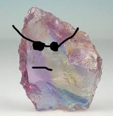
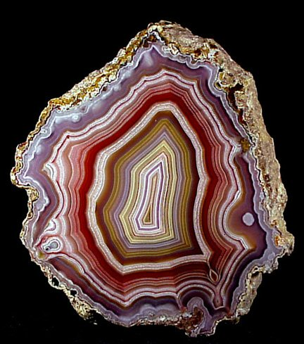
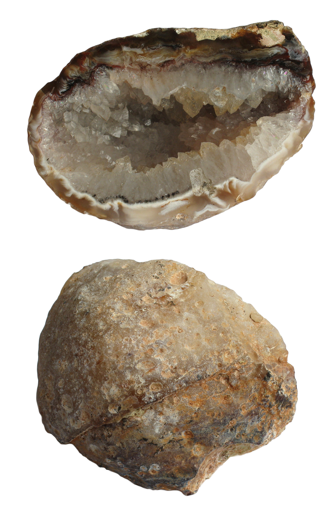

I've always loved rocks.
Some of my first vivid memories are picking up rounded stones off of the beaches of lake superior, or sifting through the rocks under the deck in my backyard.
I would sort and categorize rocks into different categories, igneous, sedimentary, and metemorphic.
I have always loved all rocks, but in my eyes, all rocks are NOT created equal. Some are way cooler, basically.
Rose quartz
Like other types of quartz, most rose quartz is formed through the process of magma crystallization, making magmatic pegmatites the primary source of larger rose quartz crystals.
However, this is not the only possible method of formation, as this mineral can also be found in hydrothermal veins.
I have found some pretty cool chunks of rose quartz in my day.
Agate
An agate crystal forms within the cavities of other rocks in acidic to neutral environments.
Its formation occurs by the accumulation of silica-rich groundwater in rock voids, over thousands of years. In fact, these chalcedony veins mostly develop within the voids of volcanic igneous rocks and plutonic igneous rocks.
Very cool.
Geode
When I was a kid, I remember buying geodes from the Black Hills in South Dakota and screaming in glee when I smashed them open with a hammer.
I was so excited to see the sparkling crystals line the inside of an otherwise unsuspecting rock.
Geodes are formed when there are pockets of air within rocks. This often happens after volcanic eruptions when lava cools around air bubbles.
These pockets leave space for groundwater to seep in.
But the water itself doesn't produce geodes–it brings along minerals which stay in the rock even after the water evaporates.
Crystals
All of the listed rocks are crystals, but I need a list. So here are some more cool crystals.
- Citrine
- Tourmaline
- Carnelian
- Amber
- Flourite